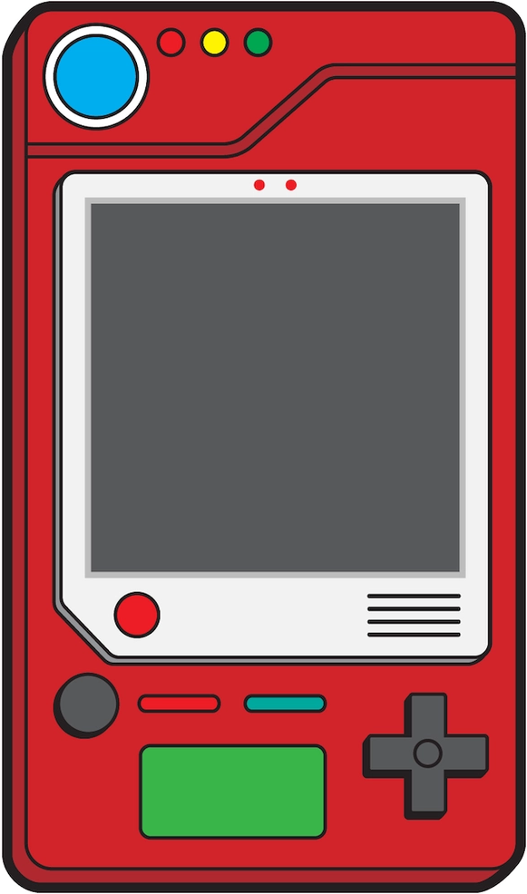

<app-search (pokemonSelected)="setPokemon($event)" (closeSearch)="dataService.showSearch=false"
    *ngIf="dataService.showSearch"></app-search>
<div class="bg">
    <div class="pokedex">
        <button mat-icon-button (click)="dataService.showSearch=true">
            <mat-icon>search</mat-icon>
        </button>
        
        
        
    </div>
</div>